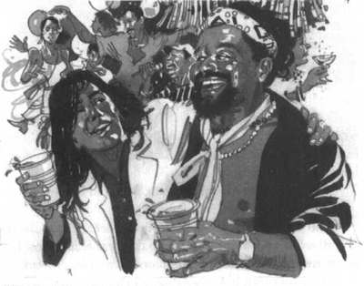

Listen to Part 1:
Tám tuần sau, nẹp bó bột được tháo khỏi chân Palito. Palito dõi mắt một cách thích thú. Đôi chân cậu hoàn toàn trắng bệch, nhưng giờ thì trông chúng thẳng hơn rất nhiều.
Cuối cùng, Palito cũng có thể ra khỏi giường. Cậu cố đứng lên, nhưng suýt nữa thì ngã lăn ra. Ban đầu, cậu vẫn chưa thể tự đứng được. Cậu ấy cần một người y tá giúp đỡ hoặc phải bám vào một vật gì đó.
Dần dần, Palito học lại cách đi bộ. Cậu đã tập các bài tập và đôi chân cậu ngày càng khỏe mạnh. Hai tuần sau, Palito đã có thể bước xuống cầu thang bệnh viện. Pedro vịn một cánh tay và Chico vịn cánh tay còn lại. Họ dìu Palito vào xe và đưa cậu về nhà.
Trong nhiều tuần, Palito phải quay lại bệnh viện mỗi ngày. Cậu đã tập những bài tập đặc biệt và bác sĩ đã theo dõi chặt chẽ đôi chân cậu.
‘Bao giờ thì cháu có thể chơi bóng đá trở lại?’, Palito thường hỏi bác sĩ.
Mỗi lần, bác sĩ đều trả lời như cũ.
‘Sắp rồi’, ông ấy nói.
Năm tuần sau, chân Palito lại được chụp X-quang một lần nữa. Lần này, bác sĩ đã hài lòng. Những chiếc xương trong chân Palito đã lành hoàn toàn.
‘Con có thể bắt đầu tập luyện lại rồi’, bác sĩ nói với cậu ấy. ‘Nhưng lúc đầu thì đừng tập quá nhiều. Hãy bắt đầu với nửa giờ mỗi ngày.’
Palito lại được về sân tập luyện rồi! Antonio và Waldir trêu chọc đôi chân của cậu.
Listen to Part 2:
‘Nhìn đôi chân mới của cậu ấy kìa!’, họ reo lên. ‘Các cổ động viên sẽ không nhận ra cậu ấy đâu. Họ sẽ nghĩ rằng đội tuyển có một cầu thủ mới.’
Dần dần, Palito học lại cách đi bộ.
Palito lại vui vẻ trở lại và bắt đầu quên đi những rắc rối của mình.
Năm sau, mình sẽ chơi cho đội tuyển Brazil, cậu ấy tự nhủ.
Nhưng niềm vui của Palito chẳng được lâu. Đôi chân cậu thẳng và khỏe, nhưng cậu không thể chạy nhanh. Những kỹ năng trước đây của cậu đã không còn nữa.
‘Đừng lo’, Chico nói với cậu. ‘Giờ thì cậu đã có đôi chân mới. Cậu phải học cách sử dụng chúng một cách nhuần nhuyễn.’
‘Vui lên nào’, Chico nói khi nhìn thấy Palito. ‘Tôi có tin tốt cho cậu đây. Cậu sắp được thi đấu trở lại.’
Palito lập tức ngồi dậy. ‘Tuyệt quá.’
‘Tôi muốn cậu chơi cho đội hai vào Chủ Nhật tuần tới’, Chico nói.
Listen to Part 3:
‘Cho đội hai?’
‘Đúng vậy, cho đội hai’, Chico trả lời. ‘Cậu cần phải luyện tập thêm nhiều lắm. Cậu sẽ chơi cho đội một ngay khi cậu đã sẵn sàng.’
Palito đã chơi rất tệ. Cậu đã đánh mất hết những kỹ năng trước đây của mình. Các hậu vệ dễ dàng cản cậu và cậu cũng không chuyền được bóng cho các tiền đạo. Đội hai đã thua trận với tỷ số 1-3. Và bàn thắng duy nhất của họ lại được ghi nhờ một đường chuyền ở cánh trái.
‘Cậu cần phải tập luyện nhiều hơn nữa’, Chico nói với Palito sau trận đấu. ‘Tiếp tục tập những bài tập của mình. Tập luyện chăm chỉ hơn nữa.’
‘Và khi nào thì cháu có thể thi đấu lại ạ?’ Palito hỏi.
‘Khi cậu thấy mình đã sẵn sàng.’
Mình sẽ chẳng bao giờ sẵn sàng đâu, Palito tự nhủ. Mình sẽ chẳng bao giờ có thể chơi bóng đá nữa.
Palito lại bắt đầu uống nhiều rượu. Đêm nào cậu cũng tới những quán bar trong thành phố một mình. Cậu thường gặp các cổ động viên của White Star, họ rất vui khi được ngồi nhậu cùng cậu. Họ nói về các trận đấu mà Palito đã từng chơi. Họ vẫn coi Palito là anh hùng của họ. Palito thích được say sưa cùng với những người hâm mộ mình.

‘Cậu sẽ bị mất việc’, Maria đã nói với cậu nhiều lần như thế. Và bà ấy gần như đã đúng.
Listen to Part 4:
Mình sẽ phải tìm kiếm một cầu thủ trẻ khác, Chico nghĩ. Có lẽ Palito sẽ chẳng bao giờ có thể chơi bóng đá trở lại.